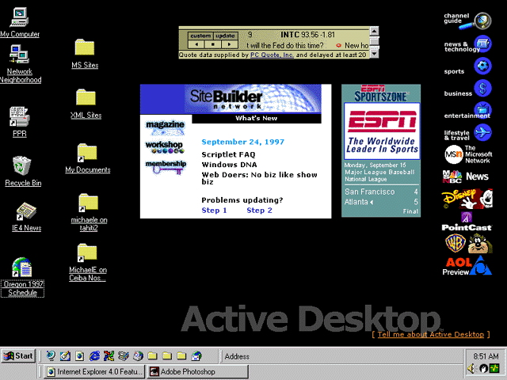

|
| ||
|
| ||
Nancy Winnick Cluts and Michael Edwards
Developer Technology Engineers
Microsoft Corporation
Updated: September 30, 1997 for Internet Explorer 4.0 final release
Contents
Changes for Internet Explorer 4.0 Final Release
Abstract
Integration of Shell and Browser
The Active Desktop
Dynamic HTML
Active Channels
Information Delivery API
Summary
Things move super fast these days. Before you can adjust to the last new way of doing something, you face yet more new ways. Even when finding and using information to accomplish your tasks is made easier, rapid change can be daunting (even if it's evolutionary). But change is the nature of our modern, increasingly computer-driven world, and part of what makes living in the 20th century so invigorating.
Take, for instance, Microsoft® Windows® 95. It wasn't so long ago that the Windows 95 interface swept aside Microsoft Windows 3.1. Even less time has passed since Microsoft embraced the Internet and began releasing its browser series. With Microsoft Internet Explorer, our customers began using a Microsoft product to locate Web-based information on their intranet or the wider world of the Internet. So what is Microsoft up to this time? That's easy. We're merging these two different information retrieval paradigms into a new Web user interface. Active Desktop™ technology for Internet Explorer 4.0 marries the best of the Internet to the Windows shell, and creates a uniform experience for working with information, whether it resides on your computer, your company's intranet, or the Internet.
The need to change the Windows 3.1 user interface was partly based on the realization that your computer's desktop is extremely valuable real estate. So with Windows 95 we introduced the Taskbar. To view Microsoft Developer Network documents, go to the Platform SDK (SDK Documentation/Platform SDK/User Interface Services/Shell/Taskbar/Taskbar), shortcuts (Technical Articles/Platform Articles/User Interface Articles/Window Management/Using Shell Links in Windows 95), shell programming (Sample Code/Book Samples/Programming the Windows95 Interface Samples/ENUMDESK: Browses the Shell Name Space in Windows 95), and a number of other user interface services (SDK Documentation/Platform SDK/User Interface Services/User Interface Services) that make it easier to organize information on the desktop.
Even before these evolutionary changes to the Windows desktop were released, people at Microsoft were hard at work on the first version of Internet Explorer  . The Internet was changing the whole game. From this beachhead, Microsoft's ActiveX™ vision for unified browsing (MSDN: Periodicals/Microsoft Systems Journal 1996 Volume 11/September 1996 Number 9/Unified Browsing with ActiveX Extensions Brings the Internet to Your Desktop) advanced the idea that accessing information from the Internet should be no different from getting it off your local computer or network. Now Microsoft was successfully selling two pretty different models for interacting with information -- one based on the Windows 95 shell, and the other on the browser.
. The Internet was changing the whole game. From this beachhead, Microsoft's ActiveX™ vision for unified browsing (MSDN: Periodicals/Microsoft Systems Journal 1996 Volume 11/September 1996 Number 9/Unified Browsing with ActiveX Extensions Brings the Internet to Your Desktop) advanced the idea that accessing information from the Internet should be no different from getting it off your local computer or network. Now Microsoft was successfully selling two pretty different models for interacting with information -- one based on the Windows 95 shell, and the other on the browser.
The seeds for integrating the Windows shell and browser were planted with the release of Internet Explorer 3.0, which componentized the Web browser as an ActiveX control so it could be embedded in a Visual Basic form, or an HTML page. But to completely integrate the browser component with the container's frame, the browser piece would have to be extended further -- it would need to become an Active Document server (go to Component Development in the Platform SDK.) Active Documents make it possible to view non-HTML content without leaving the browser, while an Active Document server is just an OLE Document server with additional interfaces that enable embeddable in-place objects to take over the entire document window. Active Documents thus unified the browsing model for applications, documents and objects.
But removing the barriers between HTML content and other forms of content only took us part of the way to unified browsing. The brainstorm that drove design of the Active Desktop was to turn the Windows desktop into an ActiveX Document container. Of course, the Active Desktop doesn't bring all of the browser's user interface elements to the party, but, as you will see, you can do quite a bit with an HTML view of the world.
By the way, you can learn more about the WebBrowser control in the Reusing Browser Technology area of the Web Workshop. If you want to play around with the WebBrowser control yourself, don't forget to check out the Internet Client SDK samples list for a listing of all the samples that will help you use the WebBrowser in your custom Web applications.
Microsoft believes that integrating the best of the Web with the best of the Windows desktop provides a superior computing experience for our customers, and yours. The Active Desktop has created a whole new desktop-computing model, in which HTML becomes the ultimate language for expressing the user interface. Additionally, by integrating the Windows desktop with the Web, the Active Desktop creates new ways for content providers to deliver information to their viewers. Whether you are a Web developer, a Web-site vendor, an OEM, a service provider, or any manner of developer or vendor, you have a variety of new ways to reach your customers. And, once again, Microsoft doesn't require you to pony up by learning a host of new development technologies and tools. Everything you already know admits you to this brave new Active Desktop world.
The Active Desktop is made up of two main layers: an HTML desktop background sitting underneath the icon layer. The icon layer supports the Windows 95 desktop paradigm you are already familiar with, and is completely compatible with any shell integration stuff you may be supporting for Windows 95. That's right -- the icon handler you wrote for Windows 95 will still work on the Active Desktop. Within the HTML layer there is further z-ordering, but everything in the HTML background sits underneath the icon layer.
But what exactly is HTML on the desktop? We're glad you asked. Let's take a look at an Active Desktop (we installed Internet Explorer 4.0 with shell integration, and so will you if you want to play with this stuff):

Figure 1. The Active Desktop
With the exception of those Windows 95-style icons on the left (remember, icons sit in a separate layer), the whole screen is your desktop HTML layer. OK, so what does that tell you? The HTML layer of your desktop is your wallpaper, initially consisting of the WEB\WALLPAPR.HTM located in your Windows folder. If you look at the Background tab in your Display Properties (right-click on your desktop background and select Properties), you will see that, in addition to the picture files that can be used for Windows 95 wallpaper, Internet Explorer 4.0 lets you use any local (to your intranet) HTML document as wallpaper. And of course, as wallpaper, it is the bottom-most layer of the Active Desktop.
So where are the rest of the HTML layers of your Active Desktop? Well, if you look at WEB\WALLPAPR.HTM you'll see that the HTML in this screen shot includes:
So that means the rest of the stuff you see on this desktop besides the icons and taskbar (quit staring, you can play with that later!) are Desktop items.
But what exactly is a Desktop item? Specifically, a Desktop item is an ActiveX control, an image, or an HTML document. Because these are all essentially things that you can put in an HTML document, they look no different from HTML wallpaper except that they live in a layer above it. You can see this by dragging a Desktop item around your Active Desktop - it will always be drawn underneath the icons and on top of the wallpaper. If you haven't already figured it out, Desktop items are hosted in an instance of the WebBrowser control.
If you've already seen the Desktop Item Gallery  , you probably recognize some of the items in the screen shot above. A Desktop item can act as a super-fancy desktop shortcut. As you will see, when combined with site subscriptions, you can create a sort of "What's New" view of your site, or present other timely information that will make a reader want to keep your "shortcut" on his or her Active Desktop. For example, as we are writing this we are missing the Mariners game, and they are currently ahead of the Rangers in the top of the ninth inning.
Yessss! (We know this because we just glanced at the ESPN Sportszone
, you probably recognize some of the items in the screen shot above. A Desktop item can act as a super-fancy desktop shortcut. As you will see, when combined with site subscriptions, you can create a sort of "What's New" view of your site, or present other timely information that will make a reader want to keep your "shortcut" on his or her Active Desktop. For example, as we are writing this we are missing the Mariners game, and they are currently ahead of the Rangers in the top of the ninth inning.
Yessss! (We know this because we just glanced at the ESPN Sportszone  item on our desktop and ended up taking a quick 10-minute diversion to check the game status by clicking the score. Or you could create a valuable Desktop item without a subscription (that is, without having to regularly download a new HTML document). For example, you could provide a more efficient way to get to some well-used feature of your site, such as the Microsoft Search Component
item on our desktop and ended up taking a quick 10-minute diversion to check the game status by clicking the score. Or you could create a valuable Desktop item without a subscription (that is, without having to regularly download a new HTML document). For example, you could provide a more efficient way to get to some well-used feature of your site, such as the Microsoft Search Component  . You can read more about authoring items for the Active Desktop (and scrape your knuckles over the nuts-and-bolts of how they work) in the Internet Client SDK.
. You can read more about authoring items for the Active Desktop (and scrape your knuckles over the nuts-and-bolts of how they work) in the Internet Client SDK.
Those of you still paying attention may have noticed there is one item in the Active Desktop screen shot that's not in the Desktop Item Gallery: that little doodad floating in the top right of the screen with all those company logos. That item is an ActiveX control called the Channel Bar, your channel-changing gateway (so to speak) to Active Channel™ content. Hang on, we'll get to that.
Finally, those of you thinking ahead are wondering what part of the Windows shell is keeping track of all these new objects (and how you can interact with it programmatically). Well, that would be the IActiveDesktop, a new interface for Internet Explorer 4.0 you use to change the wallpaper and Desktop items, and you can read all about it in the Workshop. And if you are wondering where all the persistent information about your installed Desktop items hangs around, look no further than HKEY_CURRENT_USER/Software/Microsoft/Internet Explorer/Desktop in the Registry.
The desktop icon layer extends all the features of hyperlinks on a standard Web page, such as single-click navigation and hot-tracking, to your desktop icons. Plus, it integrates this Web-like feel with the features you are familiar with in the Windows 95 shell, such as click-through transparency, drag-and-drop, file-type associations, double-clicking, and more.
Dynamic HTML is arguably the most notable feature of Internet Explorer 4.0. It is also as a critical piece of the Active Desktop. You could write a whole article just on Dynamic HTML; in fact, you could write a boatload of articles. We have (see the DHTML, HTML & CSS section of the Web Workshop).
Everybody on the World Wide Web asks for "easier access to the information I want." Internet Explorer 4.0 enables users to take control of how information is found, delivered, and organized for viewing. Webcasting is an open, standards-based solution that lets authors make this happen. With various levels of involvement that can add value to the customer's experience, authors have lots of creative choices for what is appropriate for their content.
Internet Explorer 4.0 allows a user to "subscribe" to any Web site without requiring that site to offer and administer a subscription service. In other words, the site doesn't have to do anything "extra" for users to take advantage of Internet Explorer 4.0's advanced Webcasting features.
When subscribing to a conventional Web site, users can choose:
Users have multiple options for beginning the subscription process to a conventional Web site, including:
All three options start the Subscribe and a simple, one-step subscription process. The dialog is designed to be simple enough that most users can accept the default subscription properties, including the update notification method (e-mail or icon change), the schedule of checking for updates, and whether changes are automatically downloaded. However, for us more advanced types (in other words, geeks), clicking the Customize… button in the Subscribe dialog launches the Web Site Subscription Wizard. You can tailor the subscription through a series of dialogs in the traditional wizard format. The wizard includes advanced options like tweaking the default update schedule and setting how many layers of links to download at update time.
After subscribing, users can review, modify, and update their subscription properties in a shell window that navigates the Subscriptions folder (by choosing the Manage Subscriptions… option on the Favorites menu in Internet Explorer).
The Web Workshop information about Web site subscriptions, including these topics:
While Internet Explorer 4.0 can subscribe to an entire Web site with no direct participation by the publisher, this brute-force approach offers no way for publishers (or users) to control what information is downloaded. This kind of subscription is essentially an automated way for users to cache the changing contents of a Web site locally. On the other hand, Active Channels are Web sites that host and are described by a Channel Definition Format (CDF) file. An Active Channel provides publishers control over what is broadcast to the user. But before going into the gory details of how Active Channel subscriptions work, let's look at how Active Channels are presented to the user.
The default Active Desktop for Internet Explorer 4.0 includes a special Desktop item called the desktop Channel Bar. Initially, the desktop Channel Bar presents the pre-installed set of Channel categories and top-level Channels as a vertically stacked array of logos (256-color, 80x32-pixel GIF images). Channel categories are groups of Channels with common themes such as Entertainment, Sports, and so on, while top-level Channels represent the main entry point to content on a given Web site. Aside from the obvious branding implications, the Channel Bar provides quick access to Channel content (yes, kind of like your remote control). It also includes the Channel Guide to help users learn about Active Channel content, which includes features like previewing a listing of available channels.
Figure 2. The desktop Channel Bar
Clicking a Channel category or top-level Channel launches Internet Explorer in a special, full-screen viewing mode. In this full-screen mode, the caption, menu bar, toolbars, and border elements are replaced by a single toolbar along the top of the screen that has icons to close the channel and restore the viewing mode. You can customize this toolbar (of course), and clicking the Restore icon returns the browser to its traditional mode as a window. If you like full-screen mode view, you'll be pleased to know that you can manually choose it from the View menu.
Figure 3. The Internet Explorer Toolbar in full-screen view
In both full-screen and traditional modes the Channels Explorer Bar appears along the left edge of the screen or browser window. The user interface for the Channels Explorer Bar builds on the new Explorer Bar mode for searching and for showing Favorites and History. In this mode, the browser gets a split-pane view with a simplified tree-view in the left pane (that is, in the Explorer Bar) and the original view in the right pane. Explorer Bar views make it easier to explore hierarchical content, in much the same way that Windows Explorer uses a split-pane view for the shell's namespace -- except the Explorer Bar uses indentation to represent the hierarchy instead of connecting "+" and "-" images.
In the case of the Channels Explorer Bar, the tree-view hierarchy indicates the current collection of categories and Channels installed on your computer. The hierarchy within a given Channel is indicated by its CDF file, and the hierarchy within a Channel category is stored in the Registry. There are other ways to bring up the Channels Explorer Bar, including the Channels button on the Internet Explorer toolbar, the Viewing Channels button in your Quick Launch toolbar (on your taskbar), or by selecting an Explorer Bar view from the View menu. Boy, are we determined to make this stuff discoverable or what?
For more information about the user's experience with Active Channels, check out the Active Channels topic in the Workshop.
The standard mechanism for describing and downloading subscribed information from a Web site is the Channel Definition Format (CDF), an open specification for describing a Web site's content that Microsoft recently submitted to the World Wide Web Consortium (view the press release  ). CDF's HTML-like format is an application of Extensible Markup Language (XML), and XML itself is an application of a much more general markup language called Standard Generalized Markup Language (SGML). XML was invented to provide standard ways to describe different types of information on the Web, and promises to do for data on the Web what HTML has done for text. Thus, just as HMTL tags are used to describe the formatting for different kinds of text in a Web document, XML elements can delineate the different types of its data. For more information about XML and Microsoft's support for this new data-describing standard, check out our XML section.
). CDF's HTML-like format is an application of Extensible Markup Language (XML), and XML itself is an application of a much more general markup language called Standard Generalized Markup Language (SGML). XML was invented to provide standard ways to describe different types of information on the Web, and promises to do for data on the Web what HTML has done for text. Thus, just as HMTL tags are used to describe the formatting for different kinds of text in a Web document, XML elements can delineate the different types of its data. For more information about XML and Microsoft's support for this new data-describing standard, check out our XML section.
CDF permits publishers to specify how information on their Web server is updated and how it should be presented to the user. For example, without necessarily changing anything on the Web site itself (other than creating the CDF file), a publisher can:
These capabilities are described by specific tags in the CDF file that a publisher creates and locates on their Web site. For example, the following CDF describes a really simple channel for MSDN Online's specs and standards page:
<?XML version="1.0"?> <!DOCTYPE Channel SYSTEM "http://www.w3c.org/Channel.dtd"> <CHANNEL href="http://www.microsoft.com/standards/default.asp" SELF="http://michaele/sbn-stds.cdf"> <TITLE>SiteBuilder Network -- specs & standards</TITLE> <LOGO href="http://michaele/sbn-specs.gif" STYLE="image"/> <ABSTRACT>Sample Site Builder Network Specs & Standards Channel</ABSTRACT> <ITEM href="http://www.microsoft.com/standards/cdf/default.asp"> <TITLE>Channel Definition Format (CDF)</TITLE> <ABSTRACT>The CDF specification Microsoft has submitted to the W3C</ABSTRACT> </ITEM> <ITEM href="http://www.microsoft.com/standards/xml/xmldata-f.htm"> <TITLE>XML-Data spec</TITLE> <ABSTRACT>An initial proposal for a specification for exchanging structured and networked data on the Web.</ABSTRACT> </ITEM> <ITEM href="http://www.microsoft.com/standards/default.asp#ie"> <TITLE>Standards supported by Internet Explorer 4.0</TITLE> <ABSTRACT>HTML and CSS-related drafts, recommendations, and proposals to be supported by Internet Explorer 4.0.</ABSTRACT> </ITEM> <ITEM href="http://www.microsoft.com/standards/xml/xmldata-f.htm"> <TITLE>Extensible Markup Language (XML)</TITLE> <ABSTRACT>Information on Microsoft's support of XML</ABSTRACT> </ITEM> </CHANNEL>
In this example, we define a single channel that reuses the home page for the top-level Active Channel view. (Because channels embody a new paradigm for presenting information on your Web site, a custom view will usually be created.) The rest of the code snippet describes where to find the images for the Channel Pane and Channel Bar, and uses some of the content from the MSDN Online Specs and Standards page as sub-channel items. Of course, a real channel for the Specs and Standards page would use more of the functionality available in CDF.
You can use the code above along with the downloadable sample files to recreate this Active Channel view on your own:
 Download this document in Microsoft Word (.DOC) format (zipped, 3.4K).
Download this document in Microsoft Word (.DOC) format (zipped, 3.4K).
or add a sample Active Channel to your own desktop (to prove to yourself that it works):
Remember that the channel above is not a real channel (i.e., we won't be updating it with content), so after you've created it to make sure it works, you might want to delete it by right-clicking on the icon that gets created and selecting Delete.
The default user experience for subscribing to a site that has a channel representation (that is, includes a .CDF file on its HTTP server) is very similar to subscribing to a conventional Web site. The difference lies in how detailed the default choices are for the Subscription dialog. If the user enters their subscription on a page that contains an <HREF> tag to a .CDF file, Internet Explorer uses the information in the .CDF file to create a simple Channel Subscription summary dialog with intelligent defaults for the notification, download, and schedule parameters. And, as with conventional Web sites, the user can choose OK or Cancel for these options, or customize the subscription by clicking a Customize… button.
Internet Content Providers can also include an optional registration and/or preferences page for customizing their Channel delivery options. And they can use the Profile Assistant (new support for pre-populating HTML form fields) to make gathering registration information a less painful experience for the user. The Workshop has a section devoted to the Profile Assistant , and includes the ProfAsst sample.
Actually installing a channel for your Web page is pretty simple to do -- no harder than adding an anchor element with an <HREF> tag that points to the .CDF file. The hard part is still the creative endeavor of figuring out the best way to organize your site so people find it visually appealing and can also easily and conveniently find information. Fortunately, Active Channel content gives you multiple ways to achieve this task.
If your Web site is like many others, you already have a fairly hierarchical view in place. You might even be using a tree view-like control for site navigation, in which case you have already done much of the work of creating a channel view of your Web site. This doesn't mean a redesign is necessary if navigation on your site is essentially inseparable from content. But because the user can be notified of content changes through gleams on item icons in the Channel Pane's tree view of your site, you'll need to provide some sort of hierarchical structure for your channel if you want to make use of this feature for fine-tuning updates and downloads. At a minimum, you will need to establish a unique URL for each item you want to appear under your channel's view in the Channel Pane.
You may also want to provide a special version of your home page that's optimized for the Active Channel content to display when the user clicks your Channel (that would be "changes to your channel" in TV parlance). Of course, you could just use your regular home page, but the Active Channel view is a great new opportunity to promote your site, because the user doesn't need to navigate from it to find anything.
In addition to determining how your site will look and function best as an Active Channel, there are some other important CDF features you need to consider while making support decisions.
Determining update frequencies
The <SCHEDULE> tag in CDF enables you to establish a specific time interval at which CDF-capable browsers should automatically check for updated content on your server. This feature allows you to set a schedule for when items are updated on your Channel, so Internet Explorer 4.0 can randomize downloading the changes to subscribed clients within the indicated time interval. You can also flag which items to automatically download during this interval, or only indicate as changed (unless the viewer customizes their Channel subscription to always download all updated content). And you can tag individual items with their last modified date so viewers can receive a visual indication of new or updated items.
These features allow you to reduce the load on your server by downloading only changed content, which will greatly please your more impatient viewers.
Keeping track of users
User activity. The <LOG> and <LOGTARGET> tags allow you to record online and offline user activity to an event log that you can upload to a specified URL during scheduled updates. The current CDF spec only logs whether specific Channel items (and their subitems) have been viewed. The log information is anonymous and logging can be disabled by the user (on the Advanced tab of the Options dialog in Internet Explorer's View menu) or administrator (in the Registry).
User authentification. For sites that require a user name and password, the <LOGIN> element directs the Subscription wizard to prompt for this information.
User personalization. Expanding on personalized Web sites, you can offer personalized Channels as well. This is not a specific feature of CDF as much as it expands on a currently well-understood Web feature. Instead of linking the Channel subscription anchor to a static CDF file, you can create an intermediate form to gather the appropriate profile information. HTTP cookies can be employed to store the preferences on the user's machine, so you can always download a customized CDF for that user.
Active Channel screen savers and Desktop items
Internet Explorer 4.0 also includes a new screen saver that cycles through a selection of standard HTML Web pages that can include all the things you'd expect in a cool Web page: Dynamic HTML, scripting, images, Java applets, and ActiveX controls. Web pages being cycled by the Active Channel Screen Saver are shown in the full-screen browser mode used for top-level Channel content (without the Channels Explorer Bar). A few user-interface changes have been introduced for this type of screen saver. The main changes include the Close and Pause buttons (which temporarily stop cycling the screen saver channels) in the floating toolbar over the top-right portion of the display. Also, Active Channel Screen Savers are not dismissed by moving the mouse or clicking objects on the page -- the user must click on the HTML background or the Close button.
Install the URL to your screen saver by including an <ITEM> element as a child of the top-level <CHANNEL> element in your CDF file:
<ITEM href="http://www.loadsafun.com/screensaver.htm">
<USAGE VALUE="ScreenSaver"></USAGE>
</ITEM>
The user is warned with a dialog if the Active Channel Screen Saver is not currently selected (for example, if the user has the flying windows logo screen saver selected). Note the HTML for your screen saver is cached locally and should behave well when viewed offline. See the Offline Browsing topic for more information about authoring Web pages for offline viewing.
Offline caching via CD-ROM
Offline caching enables a new Web-publishing paradigm. With offline caching you can intermingle URLs for the Internet with those from a CD-ROM, enabling a form of browsing far more powerful than the file:// protocol now used. For example, you can publish all your high-bandwidth or static information on the CD-ROM while preserving the option to stay current with changing information such as inventory levels or other dynamic data. Performance is greatly enhanced, and server traffic reduced. The technology opens other interesting possibilities such as automatic Web-site set-up via autorun CD-ROMs.
You can enable offline caching by including a CDF file on the CD-ROM that contains <ITEM> tags to URLs that are on the CD-ROM, your intranet, or the Internet. You can even reference the CDF file from within HTML to install it as a channel. Or, to make things really simple, you could include an autorun file that launches a Web View of the CD-ROM with a hyperlink to the CDF file. Appropriate text in the Web View can tell the user what to do to get things started.
The Webcasting architecture in Internet Explorer 4.0 provides hooks that allow third parties to provide new delivery mechanisms for Channels, including support for multicast Channels. In this delivery scheme, the server instead of the client periodically crawls subscribed sites and downloads new content. In a multicasting network, a server crawls the appointed sites and multicasts the updated Channel to the subscribed client machines. The advantage in this delivery mechanism is that a single network stream delivers the data to all the subscribing client machines.
It is important to note that the user experience for receiving pushed data is always the same. Whether their computer is updating subscribed Channels by dialing up in the middle of the night, or receiving updated Channel content through multicast delivery, users see the same thing (except maybe their intranet is a little "faster").
For more information see the Multicast Webcasting  page on the Internet Explorer 4.0 Web site.
page on the Internet Explorer 4.0 Web site.
Software distribution channels allow software developers to deliver updated versions of their components to users. This mechanism can also come in handy for delivering software updates to all the desktops in a corporate intranet. Software distribution channels are created through a combination of CDF and another XML vocabulary called Open Software Description (OSD) used to describe the software components.
You can read more about this subject in the Web Workshop. Also, Internet Explorer 4.0 implements a software distribution channel using the Open Software Description standard (via the Software Updates… option on the Internet Explorer 4.0 Favorites menu). You can read more about OSD on the OSD FAQ page.
For more information about Active Channels from the user's perspective, read the Active Channels topic.
For information about authoring Active Channels, check out the Creating Active Channels topic. It also includes a sample that demonstrates channel subscriptions (including an Active Screen Saver).
For additional information about channels, see the listing in the table of contents for this section.
The Internet Explorer 4.0 product page also has additional information about Webcasting with Active Channels  .
.
The Information Delivery API is used to implement the Webcasting features available in Internet Explorer 4.0. It includes features such as the Channel Manager, which adds and deletes channels and categories in the desktop Channel Bar, and the Subscription Manager, which handles Web site subscriptions. The services provided by this API are supported for third-party developers who wish to create custom software to expand on the Webcasting capabilities provided by Internet Explorer 4.0 in an integrated manner. For example, if you wanted to receive notifications when your subscribed pages are downloaded to the offline cache, then you would want to work with the Notification Manager.
You can learn more about the Information Delivery Architecture. (Note, however, that the documentation on the INotification interface has been dropped from the final release and will not be supported in the current release of Internet Explorer 4.0.)
While the Active Desktop for Internet Explorer 4.0 is just part of the story, it is a critical component of Microsoft's strategy for moving the Windows platform into the 21st century. If you read Microsoft's announcement about how the next version of Windows will include broadcast TV capabilities  , you know we are very serious about figuring out how to merge the capabilities of computers and TVs, and how the Internet will change the way people are entertained and connected to the world. During this time of fast-paced change, Microsoft will continue providing leadership that preserves the investments so many people have made in the Windows architecture.
, you know we are very serious about figuring out how to merge the capabilities of computers and TVs, and how the Internet will change the way people are entertained and connected to the world. During this time of fast-paced change, Microsoft will continue providing leadership that preserves the investments so many people have made in the Windows architecture.
If you aren't already tuned in to Internet Explorer 4.0, the magazine can help you. Also, the Internet Explorer 4.0 newsgroups are very useful. NEWSVR has a forum at ms.tools.ie4, and Microsoft's product support staff monitors the microsoft.public.inetexplorer.ie4.* groups on the MSNEWS-GW server. The newsgroups offer peer-based support, and you can also get official support from the Microsoft Technical Support page  .
.
Make sure you have fun while you are at it, because if it isn't fun, it isn't worth doing.
Did you find this material useful? Gripes? Compliments? Suggestions for other articles? Write us!
© 1999 Microsoft Corporation. All rights reserved. Terms of use.